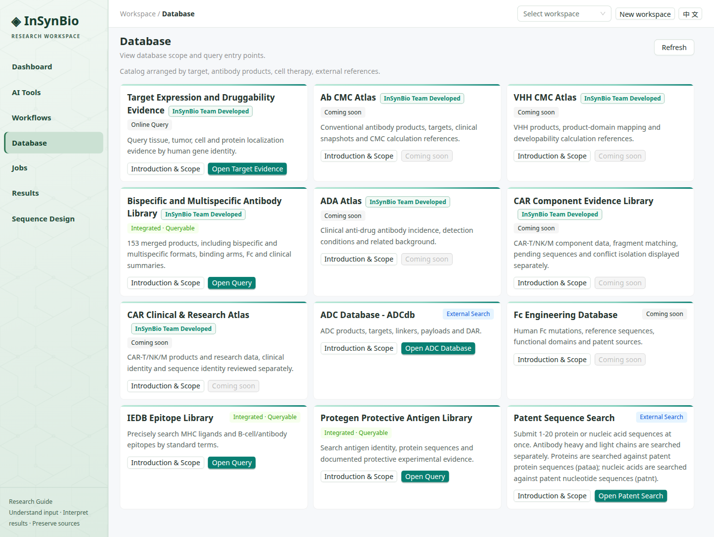
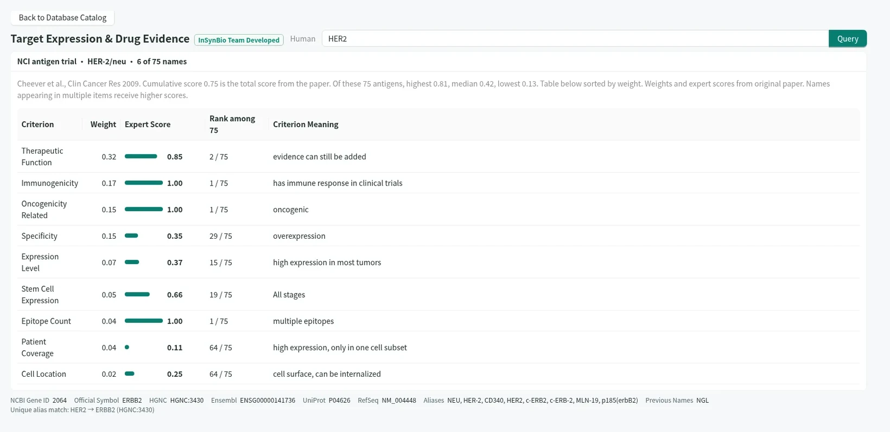
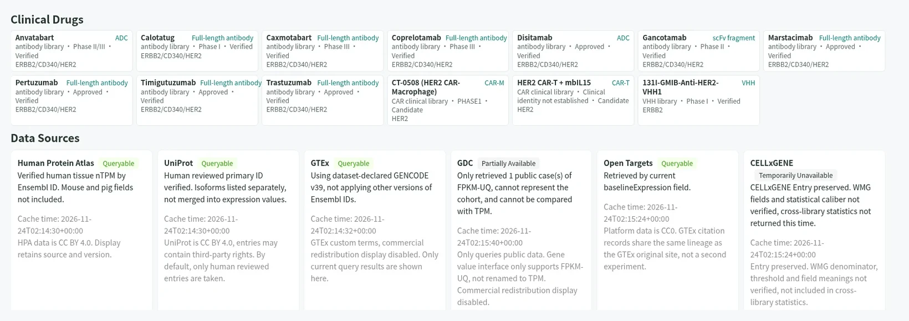
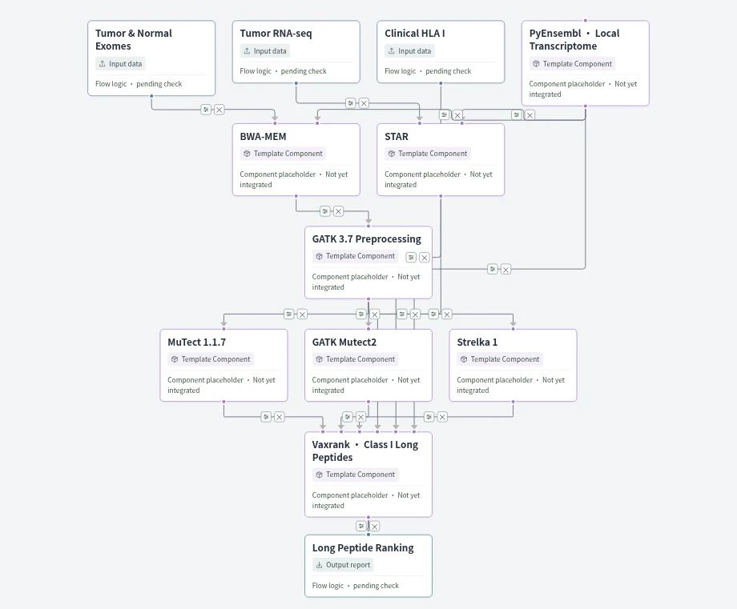
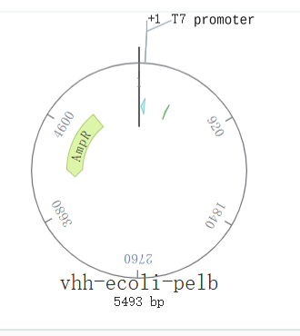
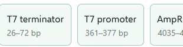
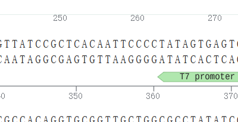

Demo video
A demonstration of the TheraSik web edition, which plays on this page. The demo was recorded in a separate test environment; it contains no client data.
▲ A walkthrough of the TheraSik SaaS interface (about 4 min).
What we do, and who we serve
A life-science AI implementation team
Drawing on experience in immunology, antibody engineering, and preclinical research, we deploy suitable computational methods into our clients’ R&D tasks.
Who we serve
Biotechnology companies, CROs, and research teams — especially projects that already have a defined target, candidate molecules, or in-house data.
The platform’s role in a collaboration
We use the current MVP to demonstrate methods and how we deliver. We deploy or develop tools, build workflows, and organize client private databases according to each client’s needs.
In this round we are looking for companies to trial the platform, starting from well-scoped real tasks, to validate practical utility together.
What we offer, and what we deliver
| Service | Primary deliverables |
|---|---|
| Tool and workflow deployment | Runtime environment, adapted workflows, and user documentation. |
| Custom tool and workflow development (DIY) | Dedicated tools, workflows, or interfaces, with acceptance examples. |
| Custom private-database build | Standardized data, search fields, sources, and update rules. |
| Computational services for R&D projects | Candidate sequences, structural models, metric comparisons, and method notes. |
We first confirm the research question, available inputs, and delivery goals, then agree the acceptance criteria and the scope of maintenance.
Our development capabilities: tools, workflows, and databases
We already have in-house tools and curated, further-processed databases, and can continue to develop and adapt them to a client’s research rules.
In-house design tools
Conventional antibody and VHH humanization
CDR grafting, surface resurfacing, and framework selection.
Multispecific antibody sequence design
Assembly of binding arms, linkers, and Fc according to published rules.
CAR construct sequence design
Selection of binding domains, hinge, transmembrane, and signaling modules.
Independently curated and further-processed databases

Targets, antibodies and VHHs, 400+ ADA records, and 200+ CAR elements, as references for design.
Client customization (DIY)
Develop dedicated tools, configure drug-discovery workflows, and organize and build private databases.
Which drugs we can analyze and design
| Drug / molecule type | Supported analysis and design | Current status |
|---|---|---|
| Conventional antibodies and VHHs | Humanization, CDR engineering, and de novo design; comparison of structure and developability. | Runtime tests completed; confirm by method. |
| Bi-/multispecific antibodies | Select binding arms; assemble and check sequences according to format rules. | Construct-assembly demonstration. |
| Non-antibody binders | Design binding domains; analyze complexes and binding interfaces. | Example workflow built. |
| Neoantigen vaccines | Analyze variants, expression, and HLA; screen epitopes and long peptides. | Example workflow built. |
| ADC | Organize antibody, linker, and payload combinations and connect the calculations. | Example workflow built. |
| CAR-T | Select binding domains and CAR elements; assemble construct sequences. | Construct-assembly demonstration. |
Trials are confirmed node by node. Some workflows are built as examples; binding, expression, function, and similar endpoints require experimental validation.
Which R&D areas the tool catalog covers
The catalog lists 210 items, of which 32 are deployed. Grouped into 8 areas by R&D task, including tools not yet deployed.
| R&D area | Catalog items | Subcategories included |
|---|---|---|
| Antibody engineering and new-molecule design | 42 | Humanization, de novo design, inverse folding, and mutation scoring. |
| Structure and interaction analysis | 46 | Structure prediction, conformation and flexibility, protein docking, and interface assessment. |
| Developability and physical simulation | 31 | Stability, aggregation, and related metrics; simulation, refinement, and energy scoring. |
| Sequence search and protein language models | 44 | Search, numbering, structure processing, sequence representation, and model scoring. |
| Peptide and small-molecule extensions | 16 | Peptide design, small-molecule docking, and related property analysis. |
| Expression and complex construct design | 9 | Expression elements, DNA constructs, and sequence generation for multispecific antibodies and CARs. |
| Immunology and cell-therapy analysis | 19 | Epitopes and HLA, immune-repertoire analysis, and CAR-related simulation. |
| ADC computation and evaluation | 3 | Linker generation and ADC combination-related calculations. |
Figures are from a snapshot of the current website catalog, aggregated across 18 subcategories. Catalog counts are not deployment counts or counts of scientific validation.
End-to-end across the platform: from evidence to construct sequences
Target evidence, specificity, and patent search
Unify target identity; compare expression, epitopes, existing drugs, and public patents.
Antibody, VHH, and non-antibody binder candidates
Humanization or de novo design; redesign CDRs as needed; review structure and developability.
Vaccine antigens and epitopes
Neoantigens additionally require variants, RNA, and HLA.
Sequence design and delivery
Protein and DNA sequences, element annotations, calculation results, and method records.
The end-to-end scheme is to be validated. External patent access is not yet connected; ADCs also include a chemistry component. Linking experimental data is planned as later work.
Overview of in-house specialist databases
Independently curated, identity-checked, and further processed into 8 specialist databases, with original sources retained.
Target evidence
Target expression and tractability evidence database.
Antibody and engineering references
Ab CMC, VHH CMC, bi-/multispecific antibody, and Fc engineering databases.
Immunology and cell-therapy resources
ADA, CAR elements, and CAR clinical and research databases.

External sources listed separately: IEDB, Protegen, ADCdb, and patent search. Access methods, versions, and verification status follow the records.
HER2 case: from database records to target analysis
Verify identity and evidence
HER2 corresponds to ERBB2; review historical scores and evidence dimensions.
Compare tissue expression
Inspect expression distributions by source and unit, and raise questions for risk verification.
Related drug precedents
Compare existing molecular formats as a reference for later design choices.



The three original figures are shown together. Scores cite Cheever et al. (2009) and are a historical reference; a project would need to add current evidence.
Difficult-target study: de novo VHH design
Target and framework conditions
Input the target structure, hotspots or epitopes, and framework requirements.
Candidates and delivery
Generate VHH candidates; deliver sequences, structural models, and interface comparisons.

The route has completed runtime tests; binding and function on difficult targets require project-level validation.
Non-antibody CAR-T binder design
Target and non-antibody scaffold
Generate and compare binding domains using routes such as BoltzGen.
Handoff to CAR construction
Review the complex and interface, then organize CAR elements and construct sequences.

An example has been built; node connection and end-to-end runs are to be validated. Binding, expression, and CAR function need to be validated separately.
ADC: antibody, linker, and payload
Study inputs
Bring together antibody candidates, linkers, payloads, and conjugation requirements.
Combinations and evaluation
Organize antibody calculations and chemical-component analysis, in preparation for experimental evaluation.

An example has been built; some components are not yet connected. Conjugation quality and efficacy require experimental evaluation.
Neoantigen vaccines: OpenVax long-peptide design
Sample and study inputs
Tumor and normal exomes, RNA, HLA-I, and reference versions.
Long-peptide candidate ranking
Alignment, variant calling, and transcript analysis to produce long-peptide candidates.

An example has been built; the full chain is to be validated. Immune responses require experimental evaluation.
Calculation results: retained candidates, metrics, and report access
Review task outputs
The results list retains the tool, run time, relevant metrics, and download access.
Next steps
Candidates can be used for option comparison, or carried into expression-sequence preparation.

An example of a standalone task result, showing metrics and file access. End-to-end validation is confirmed separately as a trial task.
Sequence design: handing candidates to the experimental team
Define the construct
Select a suitable host, vector, signal peptide, linker, and tags.
Check and deliver
Inspect protein and DNA sequences, retain element annotations, and export.
Element and sequence annotations



A public-backbone example, used to demonstrate map and annotation features. Project constructs are verified separately against the candidates.
Current status and trial scope
| Module | Current status | Confirm at trial |
|---|---|---|
| AI tools | 32 items deployed, with runtime test records. | Inputs, parameters, compute, and outputs. |
| Workflows | 5 marked as runnable; the others are examples. | Node connection, end-to-end runs, and result handoff. |
| Databases | 10 categories deployed; 2 external entries not yet connected. | Source, version, and identity-verification status. |
| End-to-end | Calculation and assembly records exist; the full chain is to be validated. | Validate the full chain after staged acceptance. |
Status as of October 2026. The platform is an MVP; binding, expression, stability, and function are evaluated by the corresponding experiments.
Future plans and client services
| Build direction | Client services and deliverables |
|---|---|
| Deploy and develop ~200 AI tools | Deploy and adapt mature tools, add project-specific functions, and deliver interfaces and acceptance examples. |
| Build and validate scenario workflows | Cover antibodies, vaccines, bispecifics, ADCs, and CAR-T; deliver workflows and run records. |
| Client private experimental databases | Organize molecule, sample, and experimental data; deliver search and comparison pages that link candidates and results. |
Start a trial with one tool, one workflow segment, or one class of data, then expand, deploy, and maintain as needed.
First trial: start with one antibody or VHH engineering task
Suggested scope: one parental molecule and one engineering goal, first validating a segment of the computation and delivery workflow.
| Both sides confirm | Example first-trial plan |
|---|---|
| Client inputs | 1 VH/VL pair or 1 VHH sequence, the engineering goal, and any available reference materials. |
| Scope of work | Select a suitable humanization or sequence-engineering method; agree the number of candidates and comparison metrics. |
| Deliverables | Candidate FASTA, a table of site modifications, metric comparisons, and method and parameter records. |
| Acceptance | Check sequences, numbering, modified sites, and output files; review sources and calculation records. |
Timeline, fees, compute, and data confidentiality are agreed before kickoff; experimental outcomes are evaluated separately.
Website: saas.insynbio.com (invitation only) Contact: wechat: rockyhj
Other tasks can also be trialed. We welcome co-funded validation; equity can be discussed for a longer-term collaboration.